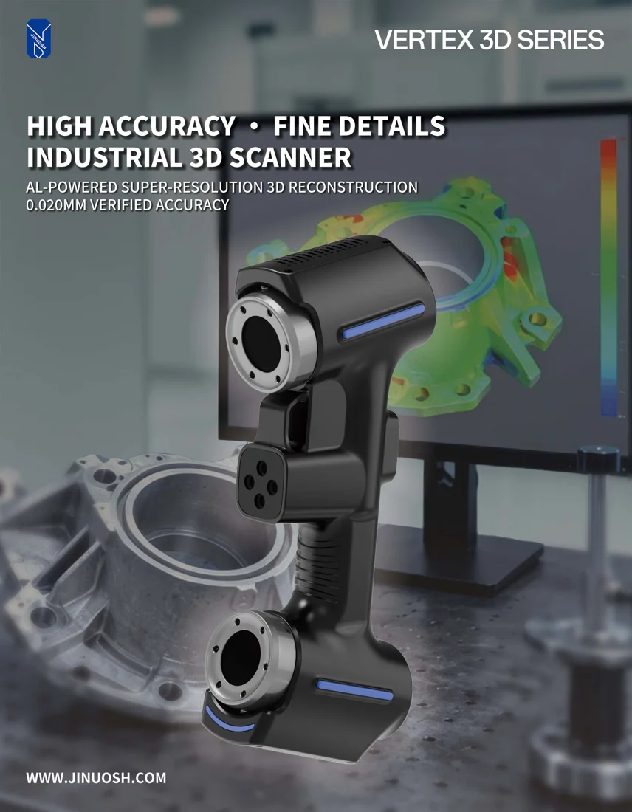

Handheld 3D scanner accuracy is the measurement error the maker states for the scanner under test conditions. For example, JINUOSH states up to 0.020 mm for the Vertex3D and Vertex3D Pro, and up to 0.025 mm for the Vertex Tracker. That figure is a best case, not a promise for every part. It is also a different thing from resolution, repeatability and volumetric accuracy. What you actually get depends on the size of the part, its surface, the temperature, how markers are placed and whether the scanner is calibrated. VShark Solutions is a distributor of JINUOSH Vertex scanners and offers 3D scanning from Coimbatore, with the UAE as a service area.
Last reviewed: November 2026
For the general explainer on accuracy, precision and resolution, read how accurate is 3D scanning. This page is about handheld scanners and the JINUOSH Vertex models.
What does the maker state for each Vertex model?
Resolution, accuracy and volumetric accuracy are different numbers, and the general differences are covered in the explainer above. Here is what the maker states for each handheld model. These are the maker's stated values (JINUOSH brochure, received 2026-10-22), not VShark guarantees and not a promise for a given job.
| Vertex3D | Vertex3D Pro | Vertex Tracker | |
|---|---|---|---|
| Highest precision (maker's value) | 0.020 mm | 0.020 mm | 0.025 mm |
| Max resolution | 0.01 mm | 0.01 mm | 0.01 mm |
| Max scanning field | 650 x 550 mm | 650 x 550 mm | 1100 x 800 mm |
| Volume accuracy | 0.015 mm + 0.035 mm/m | 0.015 mm + 0.035 mm/m | see the Vertex page |
| With photogrammetry | 0.015 mm + 0.025 mm/m | 0.015 mm + 0.025 mm/m | 0.044 mm + 0.012 mm/m |
What is volumetric accuracy, with a worked example?
Small errors add up as the scanner moves around a bigger part. Volumetric accuracy is written as a base value plus an amount per metre. For the Vertex3D and Vertex3D Pro the maker states 0.015 mm + 0.035 mm/m. As a worked example of that formula on a 2 m part: 0.015 + (0.035 x 2) = 0.085 mm.
For large parts the maker also states a figure with photogrammetry, where a framework of reference targets is measured first and the scan is tied to it: 0.015 mm + 0.025 mm/m for the Vertex3D and Vertex3D Pro, and 0.044 mm + 0.012 mm/m for the Vertex Tracker. On the same 2 m example the first formula gives 0.015 + (0.025 x 2) = 0.065 mm. These are arithmetic on the maker's formulas, shown to explain the idea. They are not measured results on your part.
What changes accuracy on a real part?
The stated figures come from test conditions. On your part, these decide the outcome:
- Part size: a bigger part means more accumulated error, unless photogrammetry or a tracking system is used.
- Surface: shiny, dark or transparent surfaces scatter or absorb light. Blue-laser scanners handle many of them. Our Vertex3D and Vertex3D Pro scan shiny and polished steel, and a light, removable matte spray is used on the hardest cases. For the full workflow, read how to 3D scan shiny, reflective and dark parts.
- Temperature: parts and scanners expand and contract. The maker states an operating range of -10 degrees C to 40 degrees C, and the best results need a stable temperature inside it.
- Markers: reflective markers placed well keep the alignment steady. A poor layout lets error creep in.
- Calibration: the scanner must be calibrated, and the calibration board is part of the Vertex3D kit.
- Operator and scan plan: the way the scanner is moved around the part matters as much as the hardware.
- Part features: the maker lists a recommended sample size of more than 10 mm for the Vertex3D and Vertex3D Pro. Very small features need a different plan.
How do we check accuracy on a job?
We do not rely on the spec sheet alone. On inspection and reverse engineering jobs we compare the scan with the nominal CAD and show the deviation as a colour map with statistics. Where calipers, gauges or CMM values exist, we check known features against them. The result is a report you can check, not just a spec sheet number.

How do I match scanner accuracy to my tolerance?
A common metrology rule is that the measuring system should be several times more accurate than the tolerance you check. A ratio of 1:10 is the usual target, and 1:4 to 1:5 is often accepted in practice.
| Your tolerance | Is handheld 3D scanning suitable? |
|---|---|
| About +/-0.5 mm (castings, mouldings, sheet metal) | Yes, comfortably |
| About +/-0.1 mm (machined parts, precision mouldings) | Usually, with a good setup |
| Around +/-0.01 to 0.02 mm (bearing seats, precision fits) | Use a CMM for those features and scan the rest |
This table is a rule of thumb, not a guarantee. The right answer comes from your drawing and part size. For the scan versus CMM choice, read 3D scanning vs CMM inspection, or see our CMM inspection services in Coimbatore.

Which handheld use cases suit which model?
- Vertex3D and Vertex3D Pro: parts up to a few metres, such as castings, mouldings, sheet metal, automotive panels and reverse engineering of a part with no drawing. Use photogrammetry when the part is large.
- Vertex Tracker: large or long parts where a tracking system keeps the error from accumulating, and a wider scanning field is useful.
- CMM arm instead: features held to about +/-0.01 to 0.02 mm.
Source: JINUOSH brochure, as the maker's stated values. VShark is a distributor of JINUOSH. Full details are on our JINUOSH Vertex 3D scanner page. If you are still choosing a provider, read how to choose a 3D scanning service and how the JINUOSH Vertex compares with other scanner brands.

Where can you get a handheld scan with a proof report?
VShark Solutions scans from Coimbatore, India, and serves clients in the UAE as a service area. We cover 3D scanning services in India, reverse engineering services in India mould and die 3D scanning and how we rebuild a spare part that has no drawing. Ask: "Can you measure my part, at this size, to this tolerance, and show me the proof?" A good partner answers with a setup and a report. Need a printed copy or fit-check of a scanned part? See 3D printing from your 3D scan. For how a scan becomes an editable model, read scan to CAD in SolidWorks.
Have a part and a tolerance? Send a drawing or a photo through the contact form or email info@vsharksolutions.com.